| 日付 | 2020年2月11日（火） |
|---|---|
| 山域 | 道志山塊 |
| メンバー | 家族（妻、長女・8歳、長男・6歳） |
| 山行形態 | 子連れ日帰り |
| アクセス | 車 |
| ルート (Map) | 観光スポーツ広場 (8:50) - (9:59) 立野峠 - (10:38) 倉岳山 (11:44) - (12:05) 穴路峠 - (12:51) 車道 - (13:20) 観光スポーツ広場 |
10年振りに倉岳山に行ってみることにする。
中央線の駅から登るのが一般的だが、
マイカー登山だと車を停める場所に困るので
裏側の南側からアプローチする。
観光スポーツ広場の駐車場に車を停める。標高520m。
1年前に秋山二十六夜山に登った際にもここに車を停めており、
子供達はここの光景を覚えていた。
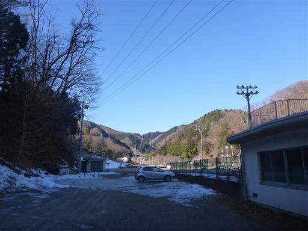
しばらくは車道を歩いて登山口を目指す。
標識は完備されている。
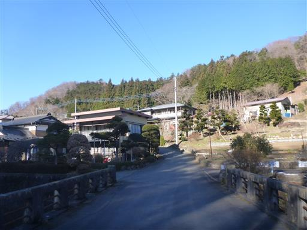
しばらく歩くと神社が見えてきたので立ち寄ることにする。
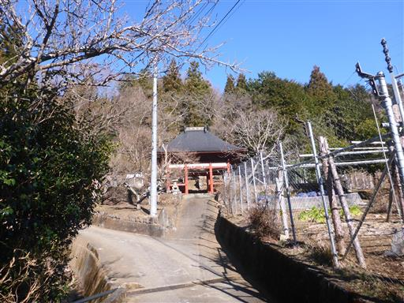
門にはバラバラになった木材が置かれている。昔は像が立っていたのだろうか？
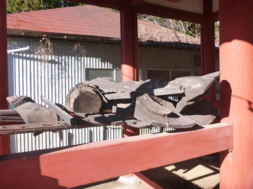
薬師堂にお参りする。
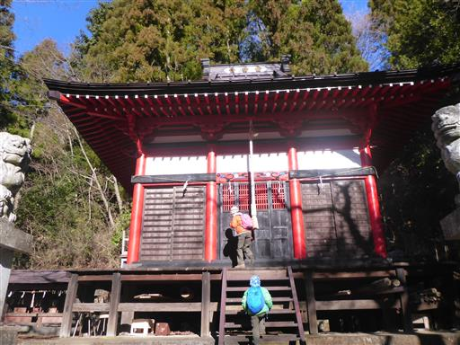
側に浜沢の大ケヤキと呼ばれる巨木がある。
解説板には、幹の大きな空洞は子供たちの遊び場だった、と書かれている。
確かに遊ぶと楽しそうな場所だが、老木のためここで遊ぶのは憚られる。
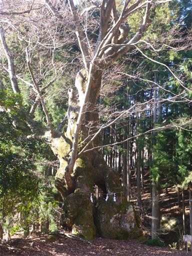
登山道へは車道から左に外れた道に入って行く。
標識があっても分かりにくい場所で、親切に地面に矢印が書かれている。
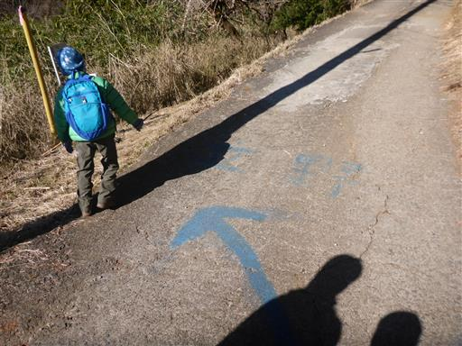
しばらくは沢沿いの道を登って行く。
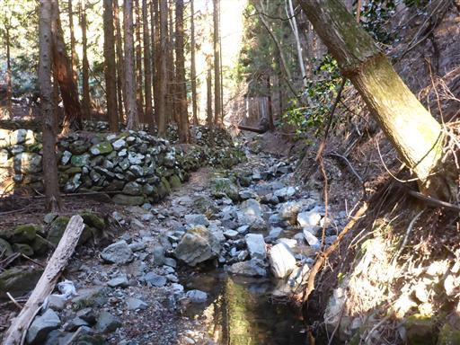
何度か沢を渡る。息子は余裕で渡っているが、娘は手を繋がないと渡れない。
昔は娘も余裕で渡っていたのだが、どこで恐怖感が生まれてしまったのだろう？
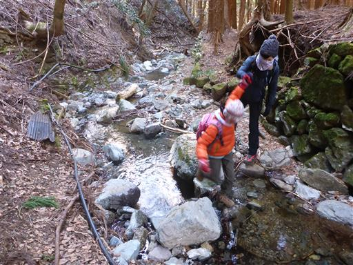
沢を離れ植林地帯を登って行く。
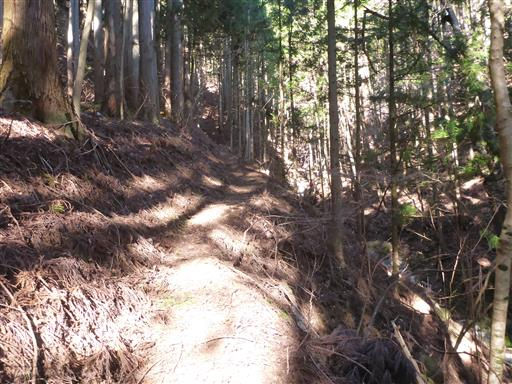
その後ようやく風景は自然林になる。
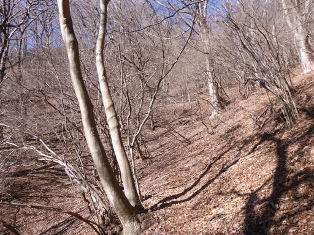
倒木が多い。根っこの方から巻くのが歩きやすいが、息子はアスレチックを楽しんでいる。
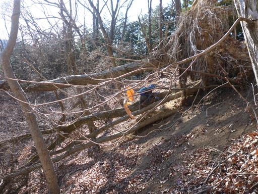
立野峠に到着。
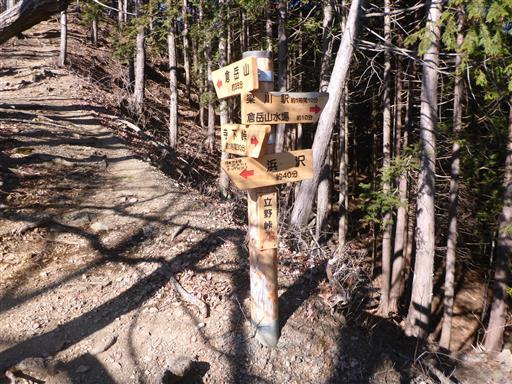
ここからは尾根道で、非常に歩きやすくなる。
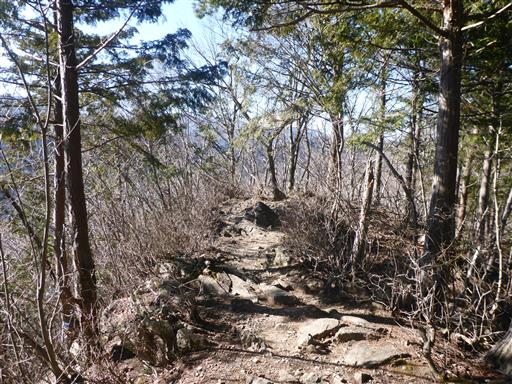
緩やかな斜面を登って行く。
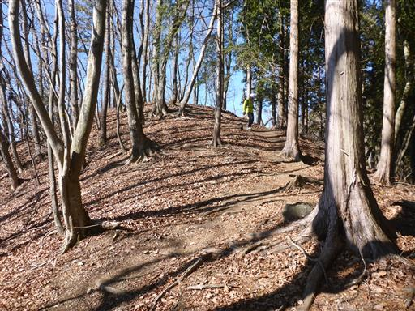
倉岳山に到着。標高990m。
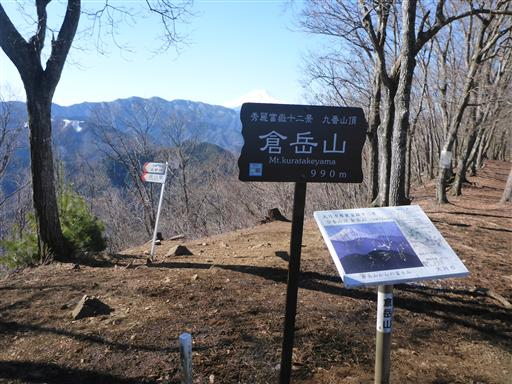
今日は富士山が非常にきれいに見えている。
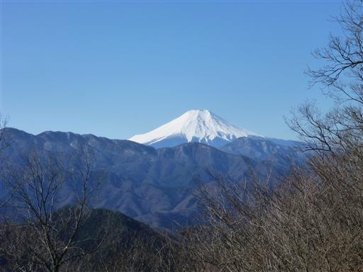
大菩薩連嶺方面の展望。
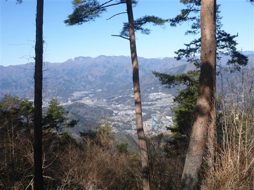
昼食休憩を取ったら山頂を出発する。
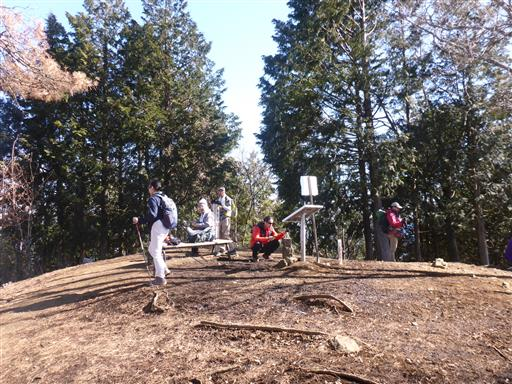
ここからも明るい尾根道。
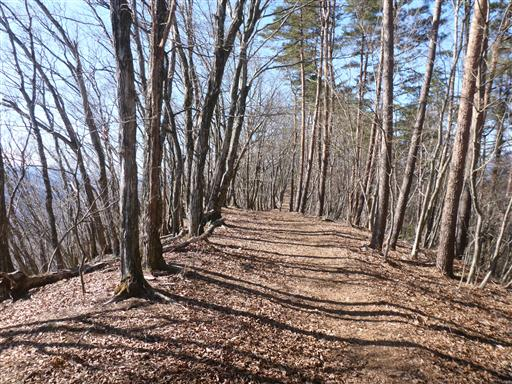
北側斜面に若干雪があるが、登山道には全く雪が見られない。
昨年雪で苦戦した秋山二十六夜山とは大違いだ。
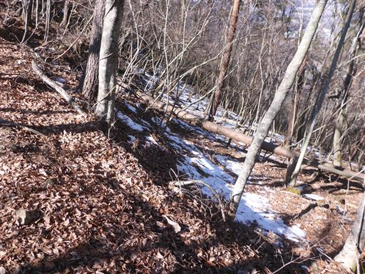
穴路峠に到着。ここからマイナー道に入って行く。
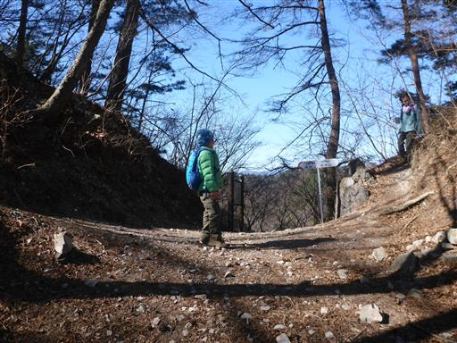
木が朽ち果てているが、他の木に巻き付かれているため、
崩れ落ちずに空中にぶら下がっている。
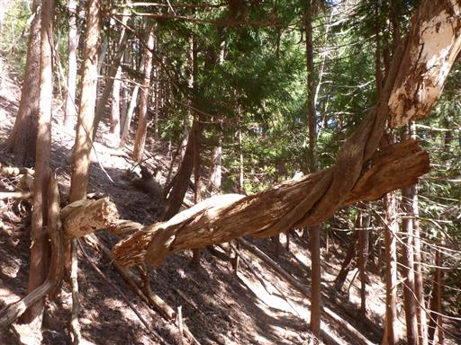
植林地帯。花粉が心配だ。
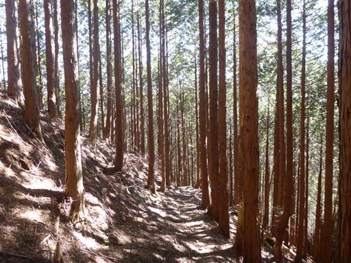
標識があったため、登山道から少し外れて巨木を見学する。
穴路峠の小楢。根回り6.4m。
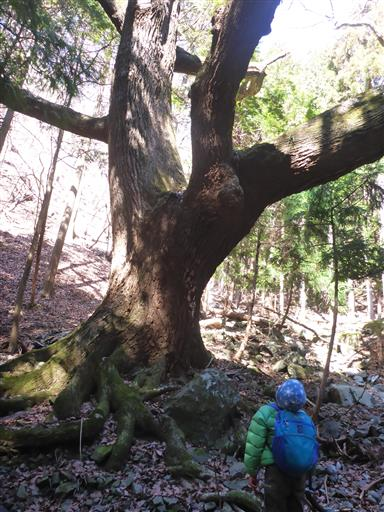
登山道は再び沢沿いの道になる。
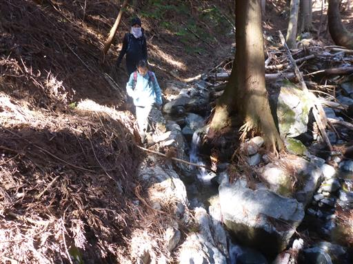
ここでも渡渉。
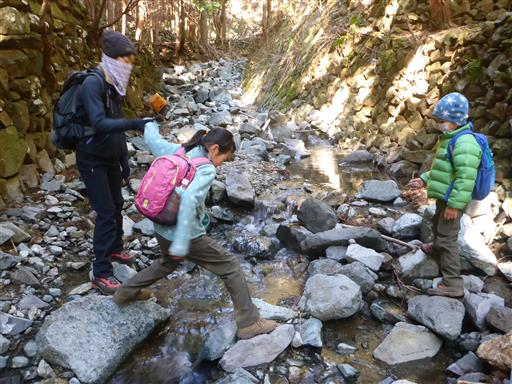
巨大なホース。何に使うのだろう？
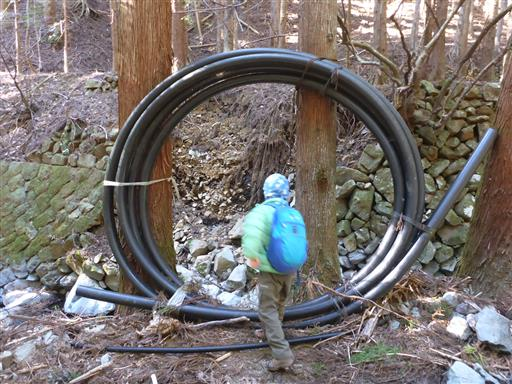
「峠道文化の森入口」の標識。
人のほとんど歩かなさそうな道に限って、
野鳥の森など、こういった○○の森という名前が付けられていたりする。
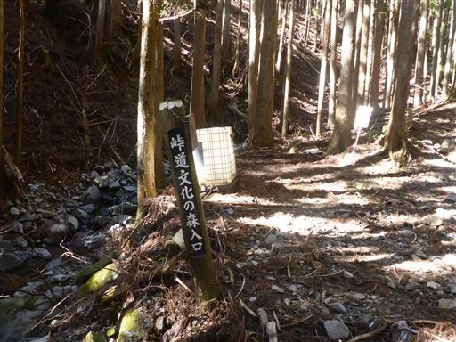
ここからは舗装道。しかし凸凹が酷すぎて車は走れそうにない。
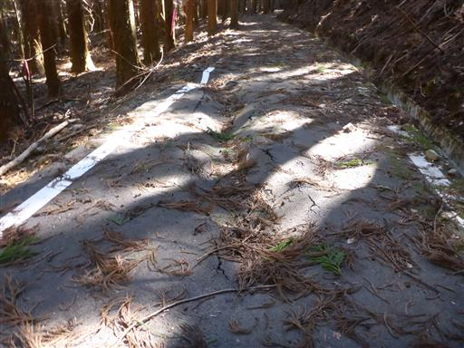
獣除けフェンスを通過。
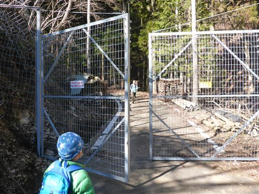
ここから駐車場までは車道を歩く。
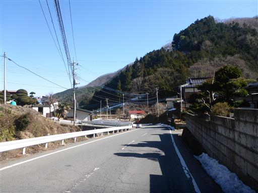
車道に沿って流れる川は秋山川。
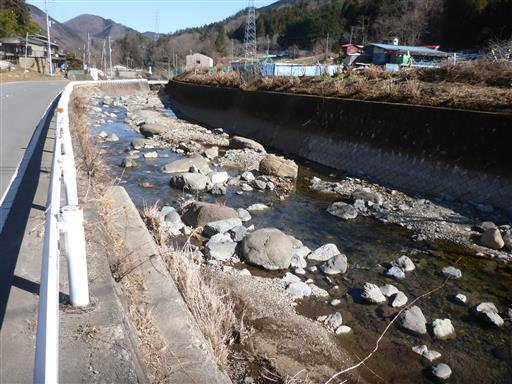
何羽かのカモが泳いでいる。
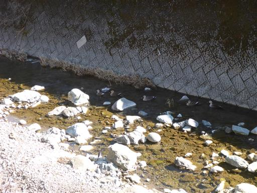
駐車場近くに到着したところで、「玉の入まんじゅう」と書かれた店に入ってみる。
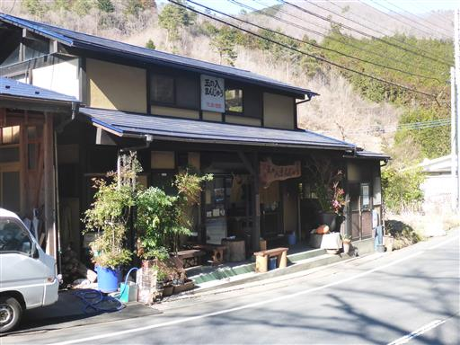
饅頭1個150円。驚くほど大きな饅頭で、まるであんまんだ。
美味しい饅頭を食べたら帰宅の途に就く。
今年は雪が少なく、子供達も楽勝で登れた山だった。
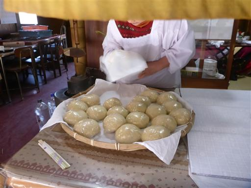